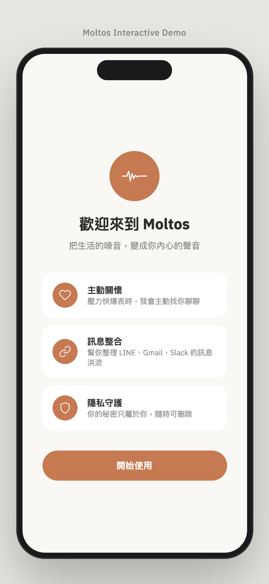
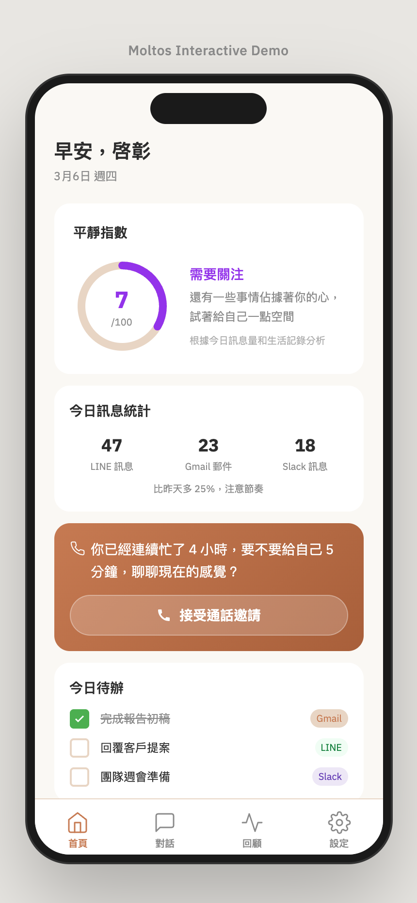
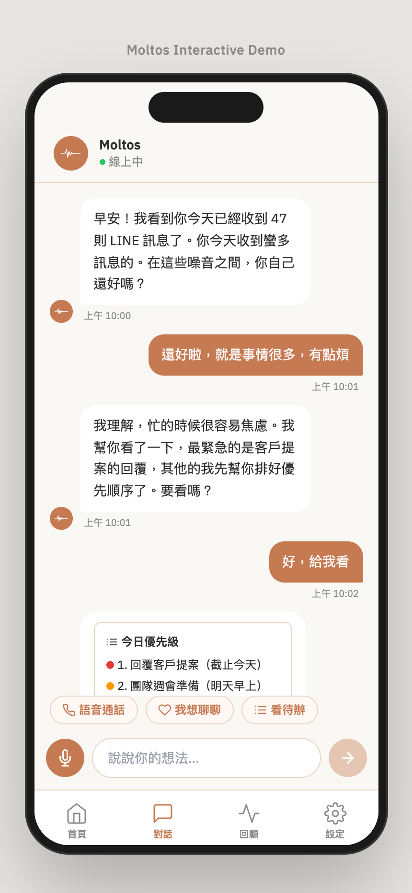
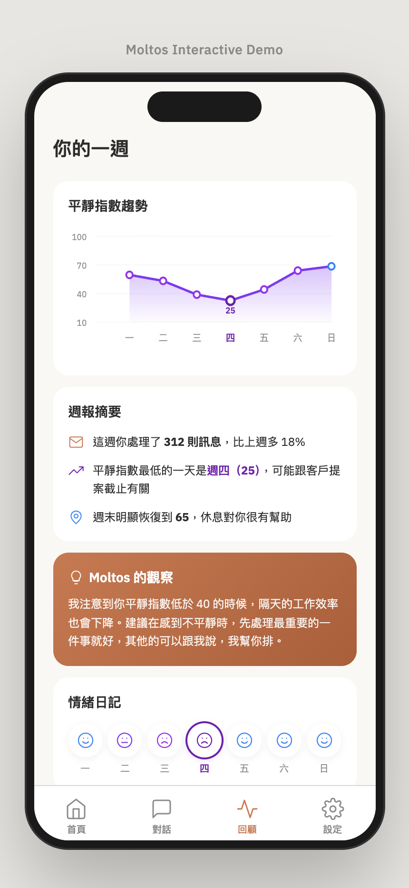
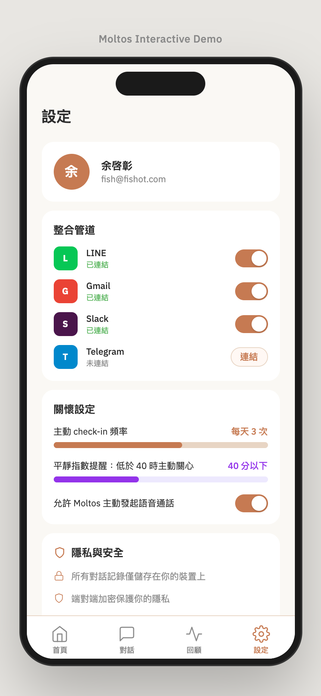

主動式心理健康 AI
將生活的噪音，轉化為你內在的聲音。
核流有限公司 | moltos.net | Shark Tank Taiwan 2026
所有人都在等你主動求助。
| 方案 | 做法 | 缺口 |
|---|---|---|
| Woebot / Wysa | 等使用者透過聊天機器人自我回報 | 看不到真實的行為數據 |
| Headspace Ebb | 冥想 App 內的語音陪伴 | 不整合工作工具 |
| Replika / Pi | 情感陪伴聊天機器人 | 不知道你的真實壓力指數 |
| ChatGPT | 通用 AI 助手 | 不會主動監測你的狀態 |
不是等你自我回報的聊天機器人。
是一個在你開口之前，就看見你掙扎的 AI 守護者。
串接你的通訊平台。只提取元數據 — 訊息數量、時間戳記、回覆間隔。
絕不讀取訊息內容。
Calm Index 演算法透過 EWMA 建立你的個人基線（14 天），再用 Z-score 跨 5 個維度偵測異常。
當 Calm Index 下降 → Moltos 主動發起語音通話，搭配雙通道情緒分析：你說了什麼 + 你怎麼說的。
簡單引導、強大儀表板 — 60 秒內完成設定


情境感知對話 + 可執行的趨勢分析


由你決定 Moltos 能存取什麼、如何關懷你

串接 LINE、Gmail、Slack、Telegram — 隨時可開關。只提取元數據（數量與時間戳記），絕不讀取訊息內容。
設定關心頻率（每天 3 次）、Calm Index 警示門檻（低於 40）、啟用/停用主動語音通話。
所有對話紀錄僅儲存在你的裝置上。端對端加密保護你的隱私。資料絕不出售。
開源、透明、可驗證
| 維度 | 訊號 | 異常門檻 |
|---|---|---|
| 訊息量 | 每日數量 vs. 基線 | >1.5σ 偏差 |
| 回覆延遲 | 回應時間趨勢 | 持續變慢 |
| 夜間活動 | 23:00-05:00 使用量 | 異常增加 |
| 未讀堆積 | 未讀數量趨勢 | 持續上升未清除 |
| 語音情緒 | 語速、音調、停頓 | 偵測到焦慮特徵 |
為什麼端側 AI 對心理健康至關重要
| 雲端方案 | 端側 AI（隱私優先架構） | |
|---|---|---|
| 隱私 | 資料離開裝置 | 資料留在裝置上 |
| 延遲 | 依賴網路 | 即時推論 |
| 成本 | $0.24/用戶/月 | 趨近 $0/用戶/月 |
| 可用性 | 需要網路連線 | 永遠在線監測 |
資料來源：Grand View Research
| 區隔 | TAM | 策略 |
|---|---|---|
| B2C | 亞太區 3,000 萬+ 知識工作者 | 透過 LINE/Telegram 免費增值 |
| B2B | 2,000+ 企業 | 按員工數授權 |
| B2B2C | 保險與醫療 | 合作夥伴整合 |
市場進入策略：
台灣（LINE）→ 日本 / 東南亞 → 全球（WhatsApp / Slack）
| 能力 | Moltos | Woebot | Wysa | Headspace Ebb | Replika |
|---|---|---|---|---|---|
| 真實通訊數據 | ✔ | ✘ | ✘ | ✘ | ✘ |
| 被動式壓力偵測 | ✔ | ✘ | ✘ | ✘ | ✘ |
| 主動語音通話 | ✔ | ✘ | ✘ | 部分 | 部分 |
| 端側運算 / 隱私優先 | ✔ | ✘ | ✘ | ✘ | ✘ |
| 開源演算法 | ✔ | ✘ | ✘ | ✘ | ✘ |
| 里程碑 | 狀態 |
|---|---|
| 社群驗證（30 人問卷調查） | ✔ 完成 |
| Calm Index 演算法 — 核心開發 | ✔ 完成 |
| 開源釋出（MIT 授權） | ✔ 完成 |
| 產品網站（moltos.net） | ✔ 完成 |
| 2026 Best AI Awards 參賽 | ✔ 完成 |
| Telegram Bot MVP | 進行中 |
| LINE 串接 | 預計 2026 Q2 |
| Beta 上線（100 位用戶） | 預計 2026 Q3 |
創辦人暨執行長
「我們不取代心理師。
我們在人們需要心理師之前，先接住他們。」
moltos.net | github.com/fishtvlvoe/moltos